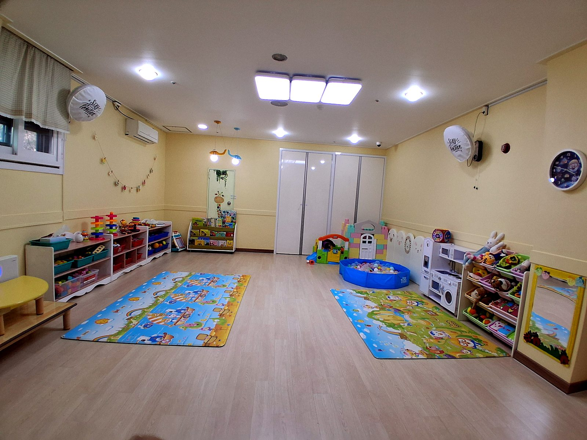
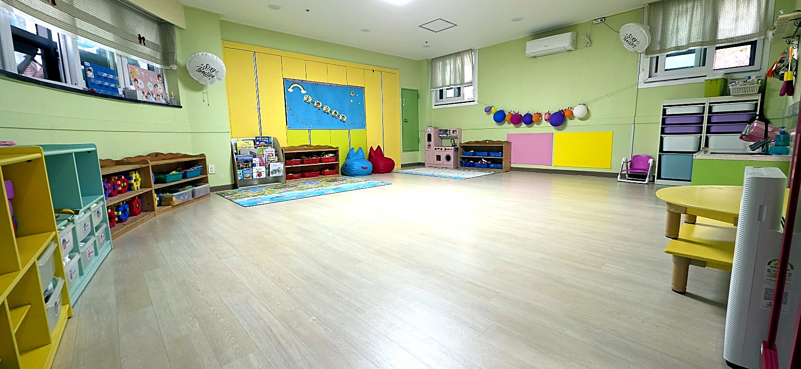
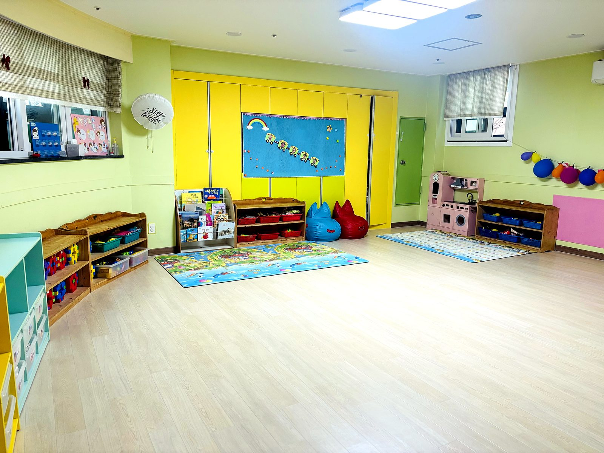
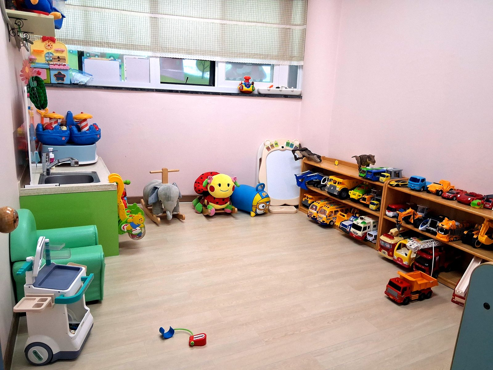

놀이공간
아이들이 자유롭게 움직이고 탐색하는 넓은 놀이 공간

안녕하세요. 이현웰가어린이집은 영아기의 발달 특성을 깊이 이해하고, 아이 한 명 한 명의 속도와 기질을 존중하는 보육을 지향합니다.
0세와 1세 아이들에게 어린이집은 세상과 만나는 첫 공간입니다. 그래서 무엇보다 안정적인 애착, 편안한 환경, 규칙적인 일과, 세심한 위생 관리가 중요하다고 생각합니다.
넓고 쾌적한 공간, 교구 뇌활동교육과 오감놀이, 야외체험활동, 수제 이유식, 키즈노트를 통한 꼼꼼한 소통으로 부모님께는 안심을, 아이에게는 따뜻한 성장을 전하겠습니다.
영아들이 기어가고, 걷고, 탐색하고, 쉬는 모든 순간이 안전하도록 공간을 넓고 밝게 구성했습니다.


아이들이 자유롭게 움직이고 탐색하는 넓은 놀이 공간

손으로 만지고 조작하며 두뇌 발달을 돕는 교구 활동

영아의 건강을 우선으로 생각하는 청결한 관리 환경
매일 사용하는 교구와 공간은 정기적으로 정리하고, 영아의 손이 닿는 곳은 더욱 세심하게 관리합니다.
놀이공간, 식사공간, 교구를 아이들이 편안히 사용할 수 있도록 관리합니다.
등원부터 하원까지 아이의 컨디션을 살피고 키즈노트로 공유합니다.
조리사가 원에서 직접 만든 이유식과 식사로 아이의 식생활을 돌봅니다.